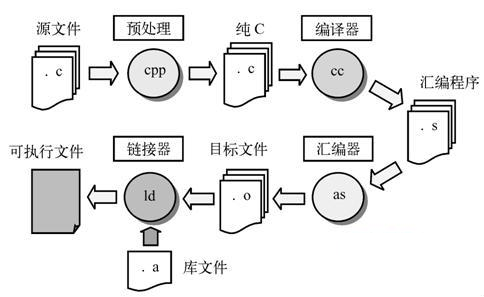

程序： 一组计算机能识别和执行的指令
计算机能直接识别和接受的二进制代码称为机器指令（machine instruction）
机器指令的集合称为机器语言（machine language）
机器语言的优缺点：
符号语言（symbolic language）: 用一些英文字母（单词）和数字来表示一个指令。
计算机不能直接识别符号语言，必须经过编译器（compiler）编译（compile）为机器语言指令，计算机才能识别和运行。
因此，符号语言又称为汇编语言（assembler language）。
ADD A, B (将A寄存器中的数和B寄存器中的数相加，结果放回A中)
汇编语言的优缺点：
高级语言（high level language）: 用人们习惯的自然语言和数学语言，一般不依赖具体的机器。
计算机不能直接识别高级语言，必须经过编译器（compiler）编译（compile）为机器语言指令，计算机才能识别和运行。
有时，编译好的机器语言代码还需要链接（link）其他的机器语言代码，组成最终的机器语言代码进行运行。